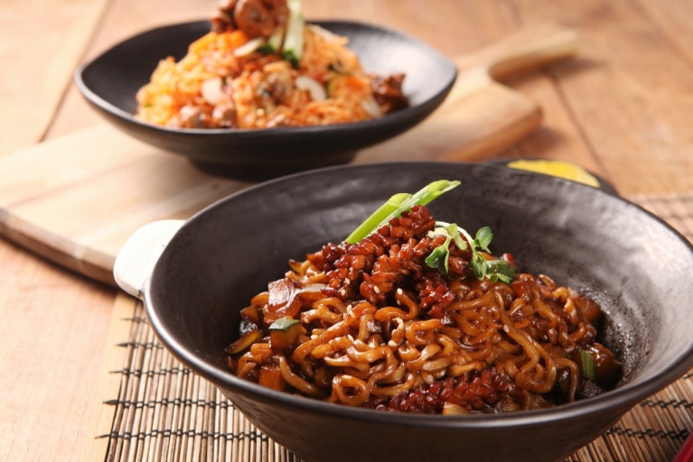
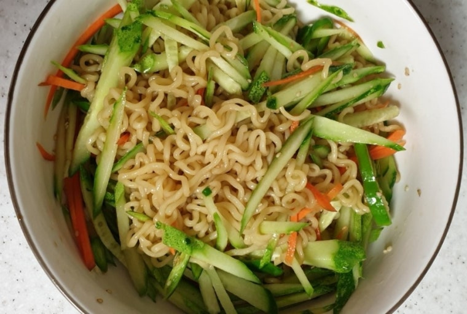
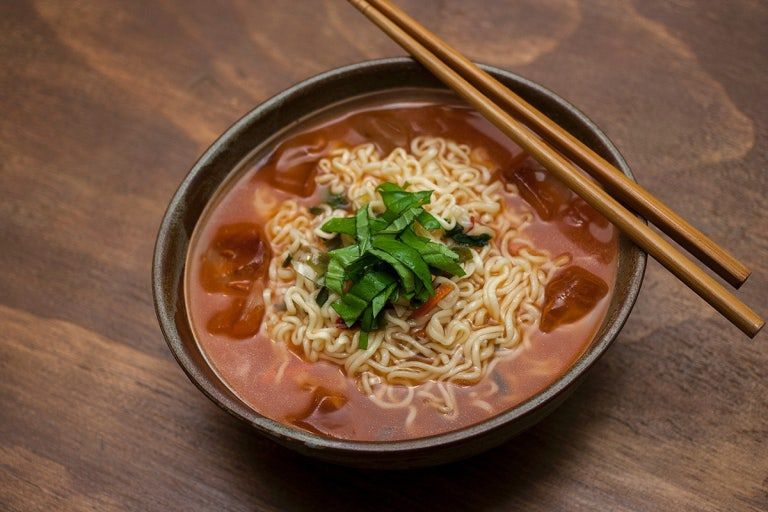
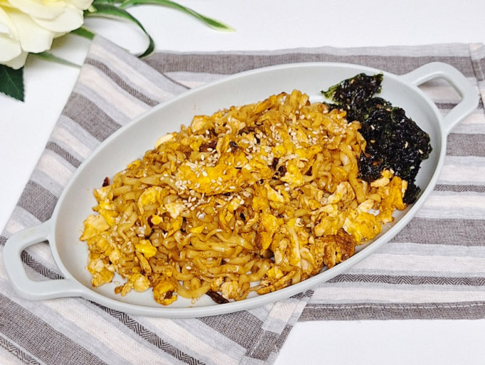

Special Recipe
투움바 라면
Point. 아웃백 투움바 파스타를
라면으로 재해석
라면으로 재해석

짜파구리
Point. 진한 짜장에 너구리
국물맛이 어우러진 조합
국물맛이 어우러진 조합
로제 라면
Point. 고추장 + 크림 우유의
부드럽고 매콤한 조화
부드럽고 매콤한 조화

마늘 간장 비빔라면
Point. 마늘 + 간장의 짭짤한
풍미 + 고추기름의 매콤한 코팅감
풍미 + 고추기름의 매콤한 코팅감

냉라면 (비빔 or 국물)
Point. 새콤달콤한 양념
+ 차갑게 헹군 쫄깃한 면발
+ 차갑게 헹군 쫄깃한 면발

계란볶음 라면
Point. 스크램블 계란과
라면 스프의 고소한 조화
라면 스프의 고소한 조화